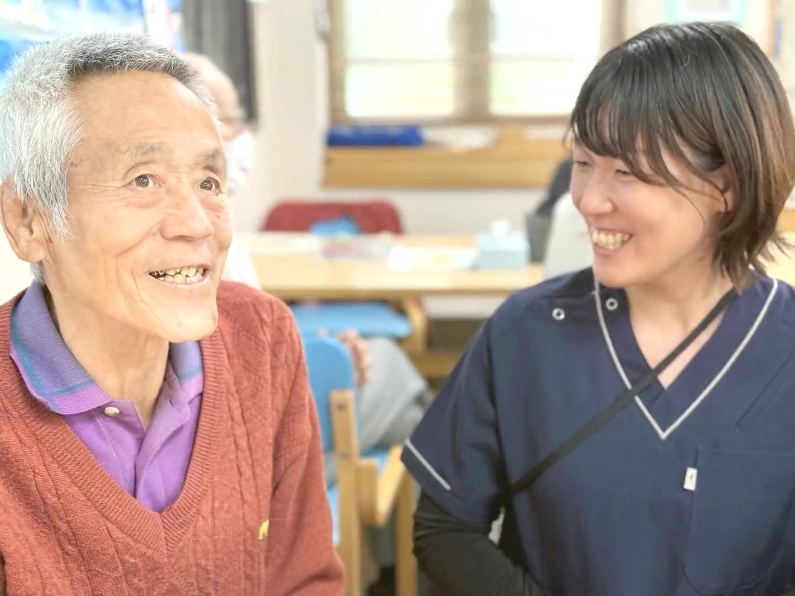
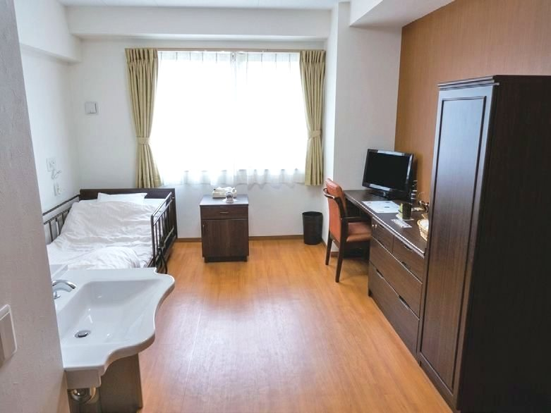
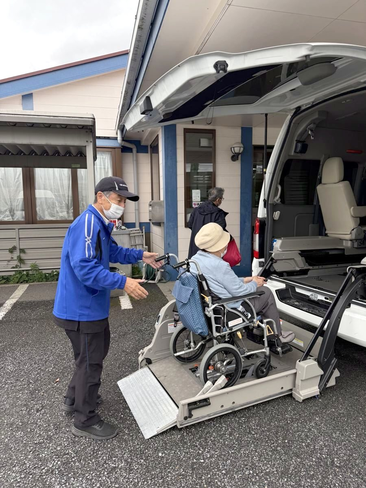
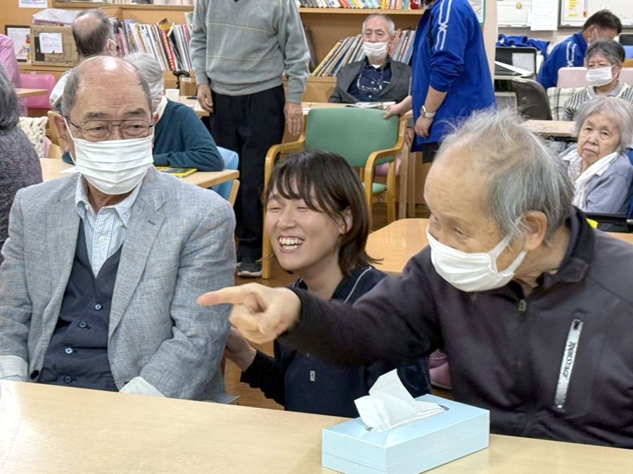
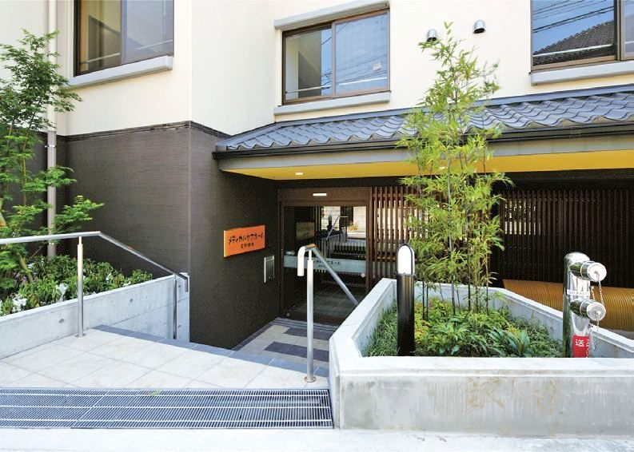
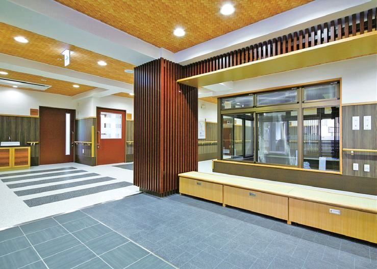
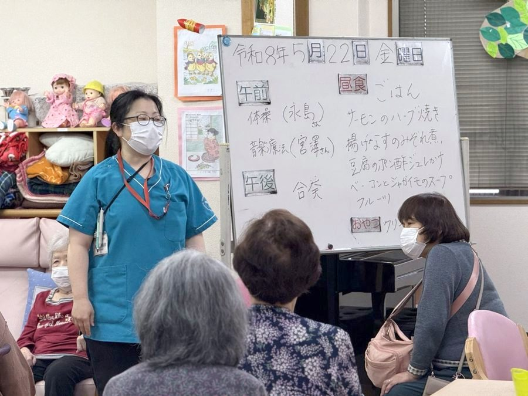
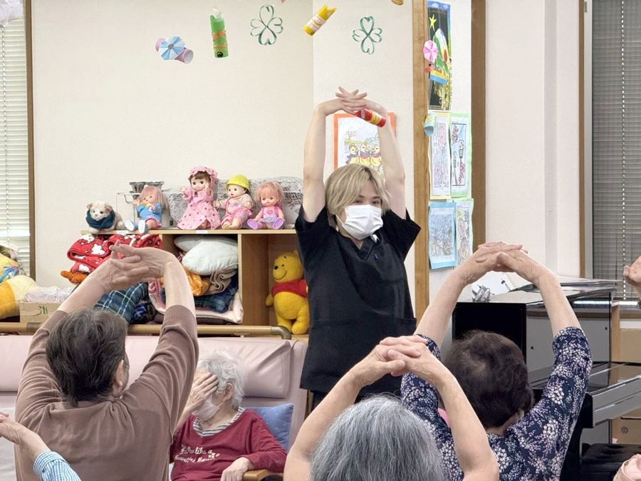

For Care Managers
TOP / ケアマネジャーの皆様へ
博滇会グループは、医療法人が運営する通い（デイサービス・通所リハビリ）、住まい（老健・有料老人ホーム）、ご自宅への訪問の事業所をさいたま市西区・中央区・上尾市に展開しています。医師・看護師・リハビリ職・管理栄養士がグループ内で連携し、ご利用者様の状態の変化に合わせて、ふさわしい場所をご一緒に考えます。
事業所名を押すと、すぐ下の早見表のその事業所の行に移動します。
各事業所が確実にできること・していることを載せています。
半日の日の入浴など、状況によって変わることは、お気軽にお電話でお問い合わせください。
［記入待ち］は各事業所に確認中です（この案の内容は仮です）
| 事業所 | 形態 | 入浴 | 確実にできる医療的ケア | 送迎・訪問エリア | 確実にしていること |
|---|---|---|---|---|---|
| 通い | |||||
| デイケアセンターみると | 通所リハ （医療保険のデイも） | ［記入待ち］ | 胃ろう・酸素の方も利用可（仮・管理者に確認中） | ［記入待ち］ | 施設の厨房で作る手作りの昼食／認知症ケアの勉強会を定期的に開催 |
| デイリハ三橋 | 半日型（通所介護） | ［記入待ち］ | ［記入待ち］ | ［記入待ち］ | スリングエクササイズ・パワーリハビリが中心 |
| デイリハくるみ | 半日型（通所介護） | なし | ［記入待ち］ | ［記入待ち］ | 半日で運動に集中できるプログラム |
| 上尾くるみ 通所 | 1日型（通所介護） 90分コースあり（要支援の方） | あり 体験の日も入浴できます | ［記入待ち］ | ［記入待ち］ | 午前は入浴とパワーリハビリ、午後はレクリエーション |
| デイホームまみや | 1日型（通所介護・定員35名） | ［記入待ち］ | ［記入待ち］ | ［記入待ち］ | 隣の保育園の園児との交流／書道・ちぎり絵などの活動／買い物・公園散歩 |
| まみや倶楽部 | ［記入待ち］ | ［記入待ち］ | 胃ろう・酸素の方も利用可（仮・管理者に確認中） | ［記入待ち］ | ご利用者様2人に職員約1人／認知症の方もご本人のペースで |
| ル・サンク湯澤 通所 | 通所リハ（老健併設） | あり（季節の特別風呂も） | ［記入待ち］ | ［記入待ち］ | 理学療法士のマンツーマンリハビリ／毎月、状況報告書をお届け |
| 住まい | |||||
| ル・サンク湯澤 入所 | 介護老人保健施設 | ［記入待ち］ | 常勤の医師・看護師・薬剤師が在籍 | ― | 理学療法士・作業療法士・言語聴覚士がそろう |
| 茶の木 | 住宅型有料老人ホーム （全室個室・20室） | ［記入待ち］ | 必要な医療・介護サービスを選んで利用 | ― | 24時間職員が常駐 |
| メディカルケアホーム与野中央 | ［記入待ち］ | ［記入待ち］ | お看取りに対応 | ― | 全室個室／多職種で一人ひとりに合わせたケア |
| プライエボーリ湯澤 | 住宅型有料老人ホーム | ― | ［記入待ち］ | ― | 24時間365日の見守り／変化があればケアマネさんに相談 |
| 訪問 | |||||
| ヘルパーステーション くるみ | 訪問介護 | ― | ［記入待ち］ | ［記入待ち］ | スマートフォンで記録・情報共有（直行直帰でも共有） |
| 訪問看護［事業所名］ | ［記入待ち］ | ― | ［記入待ち］ | ［記入待ち］ | ［記入待ち］ |
事業所名を押すと、各事業所のケアマネジャーさん向けページに進みます。
医療デイ・訪問看護と連携

医療保険で利用できるデイ（デイケアセンターみると）や訪問看護があり、医師・看護師と連携しながらご利用者様を支えます。
MCSで情報を共有

医療・介護の連絡用の仕組み「MCS」を使い、関わる職種どうしで日々の情報を共有しています。
変化があればその都度ご報告

ご利用者様の様子に変化があったときは、月ごとの報告を待たず、その都度ケアマネジャーさんにお伝えします。

相談窓口へお電話ください。ご利用者様の状況をお聞きし、合いそうな事業所と空き状況をお伝えします。

ご本人・ご家族と一緒に見学できます。ケアマネジャーさんお一人での見学も歓迎です。［所要時間は確認中］

契約書・同意書を交わしたのち、ケアプランに沿ってご利用者様に合わせた計画を作ります。

ご利用開始後も、ご様子を定期的にケアマネジャーさんへお伝えします。
グループの相談窓口にお電話ください。ご利用者様の状況をお聞きして、合いそうな事業所をご案内します。
上尾くるみ 通所は、体験の日も入浴できます。そのほかの事業所は、状況によって変わるためお電話でお問い合わせください。
上尾くるみ 通所に、要支援の方限定の90分コースがあります。半日型のデイ（デイリハくるみ・デイリハ三橋）もご利用いただけます。
早見表の「送迎・訪問エリアの目安」をご覧ください。境目のご住所は、お電話でお知らせいただければ個別にお調べします。
はい、ご本人・ご家族とご一緒に見学いただけます。
CONTACT
ご質問だけでも大丈夫です。空き状況もお電話でお答えします。